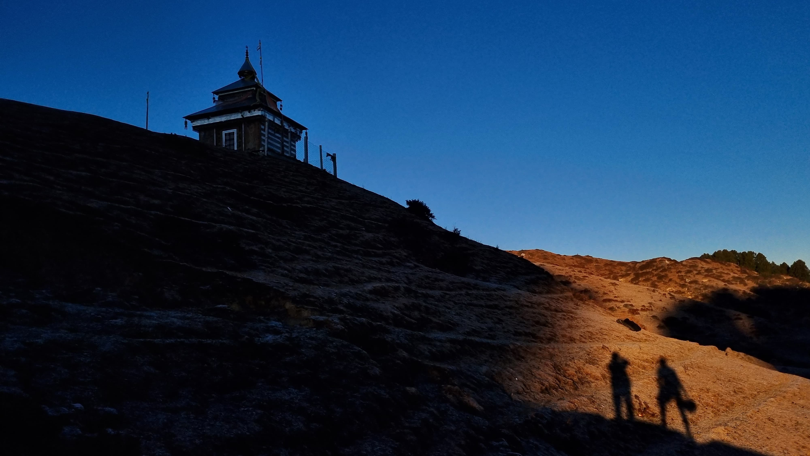

- 
Chakrata
Chakrata is a cantonment town in the Indian state of Uttarakhand that is also a sub district or tehsil in the Dehradun district.At an elevation of 2118 meters, it is located 98 kilometers from Dehradun, the state capital, and between the Tons and Yamuna rivers. Originally, Chakrata was a British Indian Army cantonment. Himachal Pradesh is to the west, and Tehri Garhwal and Mussoorie (73 miles) are to the east.
Foreigners are severely barred from entering Chakrata, which is a military cantonment with restricted access. Notably, it is the only ethnic Tibetan unit in the Indian Army and the permanent garrison of the elite and covert Special Frontier Force, also known as "Establishment 22" (sometimes nicknamed "Two-Two"). It was established following the Sino-India War of 1962. neighboring intelligence services in Chakrata also provide weapons and survival training in support of Indian foreign policy objectives, particularly with regard to neighboring nations on the Indian Subcontinent.
Past Events The region is called Jaunsar-Bawar.With a combined population of 51,101 in 1901, Chakrata Tehsil was a part of the Dehradun district of the United Provinces. It was made up of the towns of Chakrata (1250 people) and Kalsi (760 people), which is most known for the rock edict of the Mauryan king Ashoka from the second century BC, which was first found by John Forest in 1860.
- Tiger Falls is one of the highest direct waterfalls in Uttarakhand. It is 20 km from Chakrata and has an elevation of 312 ft.
- Budher (Moila Danda) is a picturesque meadow at an altitude of 2800 metres. The Karst landscapes of Budher are home to a network of ancient limestone caves.
- Lakhamandal is an ancient Hindu temple complex dedicated to Shiva and associated with the Pandavas. It is slightly further from Chakrata and may take almost a whole day of driving and coming back. For heritage and a long drive, this Archaeological Survey of India protected site is a must visit.